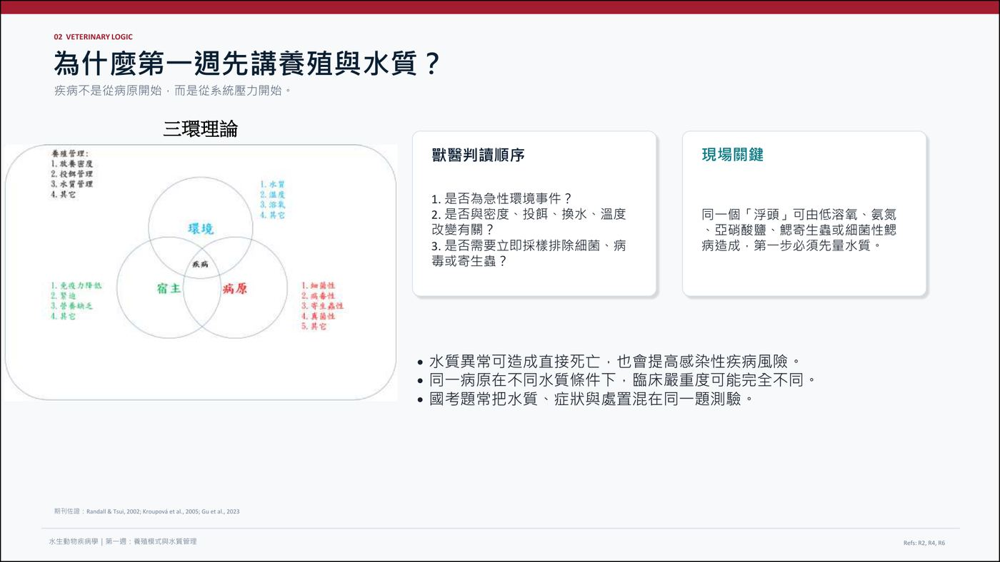

大方向與重點摘要
- 這章在講什麼
- 水生動物生病，常常不是病原先出問題，而是水質與養殖系統先出問題。這一章教你：養殖現場有哪幾種養殖模式、各自的風險長什麼樣；遇到死魚、浮頭時要怎麼問診、先量什麼、先處置什麼；以及每個水質參數（水溫、DO、pH、氨氮、亞硝酸鹽、H2S、ORP）的因果鏈。
- 為什麼重要
- 講義強調：水質異常可直接造成死亡，也提高感染性疾病風險；同一病原在不同水質下嚴重度可能完全不同；國考題常把水質、症狀與處置混在同一題（p.4、p.67）。
- 這章要抓的重點
-
- 處置順序：立即測水 → 降低急性風險 → 採樣檢驗 → 回推原因 → 制定處置；看到死魚先量水、看到浮頭先量 DO（p.28、p.51）。
- 養殖模式：池塘、混養、箱網、溪流式、循環水（RAS）、魚菜共生、生物團絮各有不同風險型態（p.9）。
- DO 是最優先排除的急性死亡因子；急救優先序增氧 > 停餌 > 減少擾動 > 必要換水（p.31）。
- 氨氮：TAN = NH3 + NH4+，真正毒的是 NH3 的比例，pH 與水溫越高比例越高（p.35）。
- 亞硝酸鹽：氧化血紅素成變性血紅素（棕血症），水中有氧魚仍缺氧；Cl- 會競爭進入鰓（p.38）。
- H2S 與 ORP：黑泥、腐蛋味＝底泥厭氧；ORP < +50 mV 通常表示有機物堆積（p.42、p.45）。
- 容易混淆
- TAN 與 NH3：TAN 是總量，NH3（非離子氨）才是主要毒性來源。亞硝酸鹽中毒與低溶氧：兩者都會浮頭、呼吸加快，但亞硝酸鹽是「水裡有氧、血液不能攜氧」。急救與長期處置不同：急性先降低毒性與暴露（增氧、停餌、換水），長期才是降密度、成熟濾床。
- 考試可能怎麼問
（推測） - 為什麼診斷前先量水質；各參數的毒性機轉與處置；TAN 與 pH、水溫的關係；Cl- 為何能減輕亞硝酸鹽毒性；RAS 的氮循環與濾床；養殖模式優缺點；水質、症狀、處置混合的臨床題。★ 老師提示：國考多為情境題；淡水先看亞硝酸、海水先看氨氮；浮頭先分低氧與寄生蟲；箱網寄生蟲處置（船上藥浴）；上游污染的答題評語（見下方黃框）。養殖模式優缺點為學長姐回憶的 2023 助教預告考題之一（見考古頁，待建），但那份是回憶，不是官方。
內容以老師講義為主體。標示「補充」的段落是講義以外的延伸；標示「推測」的是依講義強調處推測的出題方向，不是考古題。講義的「建議答案」頁在本頁標為「講義建議答案」。病例照片頁（p.55–66）的病歷號已省略，改用病例 A–I 代稱。範圍以老師上課為準。
主線：多數水質問題都可追溯到「負荷大於系統處理能力」（講義 p.46）。

為什麼在診斷疾病之前，首先需要量測水質？水質異常可造成直接死亡，也會提高感染性疾病風險；同一病原在不同水質條件下，臨床嚴重度可能完全不同，因此量測水質是確定疾病原因的首要步驟（p.5）。
讀書補充Note - ★ 老師提示的考試方向與答題評語
1. 老師說的考試方向
- ★ 國考多為情境題，不會只問病名與處置（課堂 P.17 提到）；水質題常把水質、症狀與處置混在同一題。
- ★ 淡水魚先看亞硝酸、海水魚先看氨氮（P.10、P.41 提到；氨氮與亞硝酸的毒性都跟 pH 有關）。補充（整理者依 Cl- 保護機制推測）：海水 Cl- 濃度高，亞硝酸毒性相對低，所以海水魚的風險重心移到氨氮；老師沒有展開這個理由。
- 合法養殖用藥只有十幾種（P.17 提到），所以現場很少是「有什麼藥就用什麼」。
2. 老師對講義四題問答的評語
- P.12 池塘水質日夜循環因素：
- 同學答「溶氧、溫度、光合作用、密度、飼料管理、菌相、底泥、藻類」；
- 老師最理想的答案是微生物群：投餌後有機物由厭氧菌與好氧菌分解，是日夜循環的重要推手。
- P.15 溪流式上游污染怎麼應對：
- ★ 老師最滿意的答案是跟上游廠商搞好關係，對方要排水時會先通知你；
- 其他答案的評語見「溪流式與箱網」那一則。
- P.17 開放水體疾病處置：課堂情境是「箱網發生寄生蟲怎麼處理」，答案與評語見「溪流式與箱網」那一則。
3. 同學預測題的標示（非官方）
- 同學整理的預測題把「養殖模式」標為「去年第 1 題」、「水質參數」標為「去年第 2 題」；出處未確認，只能當作出題方向的參考。
標示：來源：老師口述（同學的上課錄音筆記，非官方逐字稿）；數字與說法未經核對，以老師上課與講義為準。
養殖產業與養殖模式 Aquaculture Systems
講義的口訣是：不是哪一種系統最好，而是每種系統的風險不同——環境控制程度決定水質風險的型態（p.9）。
臺灣養殖現場：從苗到成魚是分工系統理解
| 階段 | 主要風險（講義 p.6、p.47–48） |
|---|---|
| 種魚場 | 親魚來源、垂直傳播、性成熟壓力；卵質、親魚營養、卵圓鞭毛蟲、弧菌與垂直／水平傳播 |
| 孵化場 | 卵質、輪蟲／豐年蝦（餌料生物）、弧菌與病毒風險；水體微生物與微小水質波動 |
| 中間育成 | 高密度、規格差、轉池與運輸壓力 |
| 成魚場（育成／成魚） | 水質負荷、天候、投餌與市場規格；密度、轉池、投餌、水車、虹彩病毒與細菌性二次感染 |
講義提醒：任何一段出問題，都可能在下一段被放大（p.6）。p.7 另列蝦的交配型式：開放式（精莢不需置於雌蝦生殖輔助器內，如美洲白蝦 Litopenaeus vannamei，交配不必等蛻殼後新殼未硬化）與封閉式（精莢需置於生殖輔助器內，如草蝦 Penaeus monodon、斑節蝦 Marsupenaeus japonicus，需雌蝦蛻殼後新殼尚未硬化時交配）。經濟魚種重視單位面積產量、疾病損失與水車、換水能力；觀賞魚種重視運輸緊迫、混養來源與小水體氨氮／亞硝酸鹽波動（p.8）。
p.2–3 為四大家魚（青魚、草魚、鰱、鱅）與臺灣十大名魚的介紹頁（午仔魚、黃臘鰺、白鯧、土魠、鮸魚、真鯛等，列肉質特色），屬背景資訊，沒有水質或疾病內容，不逐項整理。
養殖模式總覽與風險對照必考
| 模式 | 優點／特色 | 風險與限制 | 獸醫重點與現場提示 |
|---|---|---|---|
| 池塘式 p.9–12 | 設備門檻較低、適合多種經濟魚蝦、管理經驗成熟；最常見 | 颱風、豪雨、熱浪、倒藻、底泥厭氧與有機物累積；天候與底泥影響大 | 死亡時間、池色、底泥氣味、水車運轉與最近投餌量。魚浮頭先不要判定感染，先看清晨 DO、pH 日變化、氨氮與亞硝酸鹽 |
| 混養 p.13 | 共生、互補、互利（如虱目魚、白蝦、貝類）；分散單一物種市場與疾病風險；利用不同棲位與餌料來源 | 不同物種耐受水質範圍不同；用藥與休藥期管理更複雜；診斷變項增加 | 若白蝦先死、魚暫時正常，常見於底層低氧、H2S 或亞硝酸鹽壓力；同池不同物種症狀出現的順序可推估水層與毒性來源。詢問近期加水、換水、施肥、下菌、下藥、改飼料 |
| 溪流式 p.14–15 | 適合冷水性魚類；水溫低時溶氧較高 | 水源品質決定風險；上游污染可造成整批異常 | 開放水體不能只看單場，要評估水源、鄰近場、流向與近期氣候事件 |
| 箱網 p.14、p.16–17 | 適合大型魚類；開放性高、換水能力強 | 外海環境依賴高；水質變化太大（講義原文）；更受外界水體與污染事件支配 | 同溪流式：評估水源、鄰近場、流向與近期氣候事件 |
| 循環水（RAS） p.18–19 | 降低自然災害變因；水質可即時監控；用水量與排放量較可控 | 水質穩定依賴機械過濾、生物濾床、增氧、殺菌與監測；生物濾床失效或病原進入系統，在高密度下快速擴散 | 國考常考氨氮 → 亞硝酸鹽 → 硝酸鹽、濾床成熟度與硝化菌功能。常見：清洗濾材過度、突然大量換水、消毒劑殘留、停電低氧 |
| 魚菜共生 p.20–25 | RAS 結合水耕栽培；植物根系吸收養殖水營養鹽，淨化後的水回收或排放，可減少用水與化學肥料，作物增加收益；系統中的魚如吳郭魚、泥鰍、銀鱸、大嘴鱸、淡水蝦、香魚、錦鯉，植物如蕃茄、黃瓜、羅勒、胡荽等 | 魚要水質穩定、植物要營養、硝化菌要氧與表面積，三者最佳條件未必一致 | 水質監測仍以魚的急性毒性風險優先；pH 若只為植物調整，可能影響氨毒性與硝化菌效率 |
| 生物團絮（Biofloc） p.26 | 透過碳源與曝氣促進異營菌同化無機氮，把廢氮轉成微生物蛋白（可攝食顆粒） | 曝氣不足或固體物過量，可能快速轉為低氧、底泥惡化與 H2S 風險 | 核心是碳氮比、曝氣、懸浮固體與微生物社群；不是「水越濃越好」，要監測 TSS、沉降體積、DO 與 ORP。白蝦系統常見氮源、碳源、菌相與底泥同時影響健康 |
讀書補充Note - RAS 是什麼？怎麼運作、為什麼容易出事
1. 全名與概念
- RAS = Recirculating Aquaculture System（循環水養殖系統）：養殖水經處理後重複使用，不是一直換新水。
2. 水怎麼流（講義 P.18 的圖）
- 養殖池 → 顆粒去除（機械過濾，濾掉殘餌與糞便）→ 生物濾床（硝化菌：氨 → 亞硝酸鹽 → 硝酸鹽）→ UV 殺菌 → 增氧 → 回養殖池。
- 每一段對應一個問題：固體物、氨氮與亞硝酸鹽、病原、溶氧。
3. 優點與風險（講義 P.18）
- 優點：
- 降低天候與自然災害的影響。
- 水質可即時監控。
- 用水量與排放量較可控。
- 風險：
- 水質穩定完全靠機械過濾、生物濾床、增氧、殺菌與監測，系統相依度高。
- 生物濾床失效或病原進入系統，在高密度下會快速擴散（講義：控制性高但系統性爆發快）。
4. 現場最常見的失誤（講義 P.18）
- 清洗濾材過度：連硝化菌一起洗掉。
- 突然大量換水。
- 消毒劑殘留：傷害硝化菌。
- 停電造成低氧。
- 結果都是硝化中斷，氨氮與亞硝酸鹽上升，也就是案例討論 2（RAS 新系統亞硝酸鹽上升）。
5. 診斷與考試
- 講義：RAS 看濾床；池塘看日夜變化；觀賞魚看新缸與過濾成熟度（P.67）。
- RAS 出問題先量 TAN、NO2-、pH、溫度、DO，檢查濾床與水流，不要急著下藥；處置避免一次性清洗所有濾材（P.39、P.53）。
- 講義 P.18 寫「國考常考：氨氮 → 亞硝酸鹽 → 硝酸鹽、生物濾床成熟度與硝化菌功能」。
標示：1–5 的內容都來自講義 P.18、P.39、P.53、P.67，講義沒有寫設備細節或數值，這裡沒有補；RAS 結合水耕栽培即魚菜共生（P.21），可與上方魚菜共生一列對照。
影響池塘水質的日夜循環因素？底泥的累積和水質的日夜變化會影響水中的溶氧、pH、氨氮和亞硝酸鹽等指標（p.12）。
溪流式養殖如何應對上游污染導致的異常？必須評估水源、鄰近場、流向與近期氣候事件，以制定合適的應對策略（p.15）。
開放水體中獸醫處置應考量哪些因素？水源的質量、鄰近養殖場的狀況、流向及近期氣候事件（p.17）。
讀書補充Note - 老師口述：產業分工與石斑經濟數字（P.6）
1. 為什麼分工這麼細
- 每個魚種、每個階段的養法都不同；另外是風險分擔：孵化一批數十萬、中間育成一批數百萬、成魚場一池可達數千萬元。
- 完全養殖要做得起來，苗的數量必須達到經濟規模，否則養殖場不會養。
2. 孵化場的餌料生物
- 輪蟲依大小分 SS、S、L 型，孵化後約 3 天用 SS 型；另有橈腳類與豐年蝦（Artemia）。餌料生物與魚苗品質、疾病息息相關（對應講義孵化場風險：輪蟲／豐年蝦、弧菌與病毒）。
3. 以石斑為例的各階段（老師口述，數字僅供感受規模）
- 種魚場：以「碗」計賣卵，一場一天可產 100–300 碗；石斑多在月圓前後產卵；一尾種魚約 50–200 萬元。
- 孵化場：卵孵化到「8 分苗」約近 2 個月，一尾約 3–4 元；技術好一碗卵可孵約 100 萬尾，差的只有 3–10 萬尾。
- 中間育成：8 分苗養到 2–3 寸約 1 個半月，一尾約 12 元；幾乎都是高密度水泥池，不能用土池，疾病易發。
- 成魚場：南部約 8 個月可賣，每台斤約 160–180 元；北部多養 2–3 個月，價格更高；大雨使鹽度降低、投餌過多使氨氮升高，都會造成死亡。
4. 問診與交易
- 問診時先確認魚種，以及對方是種魚場、孵化場、中間育成還是成魚場；能講出養殖術語（含台語說法），養殖戶會更信任你的專業。
- 交易規則：魚上魚車後輪子一動就「買定離手」，沒有鑑賞期，途中死亡由買方承擔；中介每尾抽成（孵化苗約 0.5–1 元、中間育成約 2–3 元），中介仍存在是因為掌握下游銷售資訊。
標示：來源：老師口述（同學的上課錄音筆記，非官方逐字稿）；數字與說法未經核對，以老師上課與講義為準。
讀書補充Note - 老師口述：蝦類養殖（P.7）
1. 養殖種類與特性
- 台灣主要養草蝦、白蝦、斑節蝦；養到大隻都可稱明蝦。白蝦約一斤 30–40 尾，斑節蝦一尾可達 100–200 g。
- 白蝦（開放式）不需等蛻殼就能交配、技術門檻低、飼料便宜，所以最多人養。
2. 養殖管理
- 蝦苗養到紅金期（約 15 天）或黑殼期（約 20 天）後放入土池。
- 池中放三角形網（餌料台）放飼料，定時拉起來看：來吃的蝦多表示健康，變少就有問題。
- 蝦的育成率一般約 3 成，能到 4–5 成已很高；宣稱 8–10 成要小心。
3. 常見疾病與通報
- 弧菌感染（最常見）、白點病毒 WSSV（要與弧菌造成的白斑區分）、早死症、桃拉病毒、EHP 微孢子蟲、寄生蟲與細菌性疾病。
- 身上有白斑的蝦非人畜共通，仍可食用。非法定疾病可建議提早收成；若為 OIE（WOAH）或法定通報疾病，第一步是通報防檢局，可能整批銷毀。
- 泰國蝦（淡水長臂大蝦）曾有十足目虹彩病毒，需銷毀；虹彩病毒另有魚（石斑）與蛙類的類型。
- 蝦沒有可用的細胞株，研究只能用活體或昆蟲細胞；蝦屬無脊椎動物，實驗不需申請 IACUC，但老師認為蝦仍有痛覺（動物福利議題）。
標示：來源：老師口述（同學的上課錄音筆記，非官方逐字稿）；數字與說法未經核對，以老師上課與講義為準。
讀書補充Note - 老師口述：經濟魚與觀賞魚（P.8）
1. 觀賞魚的特性
- 鬥魚其實可以混養（從小一起養不太打架）；比賽用的才單養，比賽時抽開隔板讓它緊迫展鰭來評分。
- 錦鯉常發錦鯉疱疹病毒（KHV），水溫、緊迫、投餌過多會誘發；老師說台灣現在幾乎找不到沒帶 KHV 的錦鯉。
- 觀賞魚供應鏈：原生地採集 → 貿易商批發 → 水族館。批貨必須整批進，必然混有病魚；好的水族館會先放檢疫區觀察。一般消費者從水族館買的魚多活不過 3 個月（尤其燈科魚）。
2. 用藥界線
- ★ 水族館賣的藥不可用於經濟魚種：多為禁藥（孔雀綠、甲基藍），殺蟲效果好但具致癌性、破壞環境。
- 觀賞魚飼主常把魚當伴侶動物，願意為便宜的金魚或血鸚鵡就醫；送到時常已亂用過藥，只能請飼主維持水質乾淨，讓魚靠自身免疫恢復。
標示：來源：老師口述（同學的上課錄音筆記，非官方逐字稿）；數字與說法未經核對，以老師上課與講義為準。
讀書補充Note - 老師口述：池塘式問診五重點與漁電共生（P.10–12）
1. ★ 問診五個重點（老師補充）
- 死亡時間：死一天內（或昨晚）的魚檢驗才有效；超過 2–3 天會有死後變化，原本的病原菌被腐敗菌、厭氧菌取代，判讀會失真。
- 池色：做藻相還是菌相。藻相池要問有沒有倒藻；倒藻會產生硫化氫使魚蝦中毒。
- 投餌與攝食：正常進食卻突然死亡 → 多半水質劇變；一陣子不吃 → 細菌性感染機率較高。
- 底泥：
- 底棲種（石斑、鱸魚、蝦蟹）最受底部厭氧與有機物堆積影響，底部氨氮會很高；虱目魚等中上層魚較不受影響。
- 可請養殖戶挖底泥，黑色爛泥表示底部出狀況；地震、颱風翻動底泥時，氨、亞硝酸、硫化氫會一次衝上來，整池倒藻。
- 打氣裝置是否足夠：不足就缺氧；清晨 DO 最低，是最常見的死亡時段。
2. 其他補充
- 氨氮與亞硝酸的毒性都跟 pH 有關；淡水魚與海水魚先看哪一項，後面水質章節會講（淡水重亞硝酸、海水重氨氮）。
- 蝦池多為土池鋪沙，斑節蝦會鑽沙。
3. 漁電共生案例（P.11 照片）
- 一大池只有一台打氣機，蓄水池拿去養別的魚，換水直接從大排抽；清晨常缺氧浮頭，就放不到規定密度（虱目魚 1 萬尾）。解法是增加並預備水車。
- 光電板下水清澈，但溶氧不一定高，清晨易缺氧；投餌區積餌 → 有機物多 → 寄生蟲發病。
- 停電是大問題：光電賣給電廠不能自用，颱風停電數天魚就缺氧死亡；可加裝儲能設備或發電機，或走併網自用。早期立柱型光電池難收魚，現在在池邊挖集魚溝（約 60 cm 深），洩水時魚自動集中。
標示：來源：老師口述（同學的上課錄音筆記，非官方逐字稿）；數字與說法未經核對，以老師上課與講義為準。
讀書補充Note - 老師口述：混養的補充（P.13）
1. 為什麼會有混養
- 單養（集約式）一年只收成 1–2 次，賺得快但風險高，因而演變出混養。例：白蝦搭虱目魚，控制好時間幾乎每月都能收成，利潤不如專養但風險分散；白蝦會吃掉殘餌。
- ★ 集約式的感染疾病風險高於混養：混養密度較低，水質影響也較小。
2. 管理困難
- 下藥困難：魚與蝦（無脊椎）對寄生蟲藥（銅離子、有機磷、三氯松類）耐受性不同，鯽魚、筍殼魚、草魚也各不相同，無法一次全池用藥。（同學筆記寫「三氯仿」，整理者推測為 trichlorfon 之誤，待核對。）
- 做菌相的池要問下什麼菌（枯草桿菌、光合菌、其他益生菌）；放久變質的菌下去會出事。光合菌可能造成底部硫化氫堆積，底棲魚容易死。
- 密度不能兩邊都高：專養白蝦時虱目魚只放 2–3 千尾。蝦最常出問題的是水質，要先看水質、是否下雨、氨氮與 pH 變化。
3. 季節
- 換季（夏轉秋）水質動盪快，次級性細菌感染容易爆發，例如烏魚的鏈球菌、乳酸球菌症。
- 古語「白露水，毒過鬼」：白露節氣氣候與水質變化最大，不宜放苗。
標示：來源：老師口述（同學的上課錄音筆記，非官方逐字稿）；數字與說法未經核對，以老師上課與講義為準。
讀書補充Note - 老師口述：溪流式與箱網（P.14–17）
1. 溪流式的魚種與設施
- 溫度與溶氧成反比：溫度低溶氧高。台灣溪流式為淡水，養虹鱒、香魚、莫瑞鱈。
- 虹鱒：
- 多為國外進口，檢疫不周易帶入新疾病；細菌性疾病可造成尾部潰爛、眼睛與體表出血、腹水。
- 適溫約 15–23 ℃，25 ℃ 就撐不住；換水時溫度跳動會缺氧、邊換邊死。因颱風摧毀管線難維修、氣候變暖，養殖越來越少。
- 香魚：
- 主要供應五星級飯店；從溪流引水入蓄水池再抽用；池型多為方形，八卦型池較新，便於定點投餌，跟風水無關。
- 香魚公母看臀鰭：凹入是公、圓弧是母。階梯式池：小魚放上層，越大往下移；最下層放鯰魚、鱸魚清殘餌；缺點是上層感染會一路傳到下層。
- 常見寄生蟲：車輪蟲、微孢子蟲、白點蟲，後續常伴隨細菌性感染，場內下藥困難。
2. ★ 上游污染與看鰓判讀
- 上游污染的特徵：隔天突然大量暴斃，水質卻驗不出問題——上游養殖場或加工廠排放後水已流過。
- 看鰓判讀中毒：
- 正常鰓表面有一層黏液；急性中毒或藥浴後黏液被洗掉，二級鰓小片特別明顯。
- 中毒或細菌性感染時，二級鰓小片腫脹（像烤番薯），無法氣體交換而死；黏液過多表示有物質刺激，也常導致缺氧。
- 沒有直接證據前，不要對養殖戶說是上游工廠害死的。
3. ★ 老師對 P.15 各種答案的評語
- 跟上游廠商搞好關係：老師最滿意，對方要排水時會先通知你。
- 替代水源：另找支流或地下水（需申請，超抽會地層下陷）；夏天也用地下水降水溫。阻斷水源、持續換水、蓄水池也是做法。
- 過濾裝置：對金屬離子或未知毒物無效，主要只能殺菌。
- 找環保局：只驗 DO、pH、氨氮、亞硝酸、ORP 等，污水已流過就驗不出，不一定站在你這邊。
- 即時監測：IoT 探頭易髒需常換；監視器看到異常浮頭就換水。下雨天最常偷排廢水，蹲點可挑雨天；若知上游工廠類型，可依其製程推測毒物再針對檢驗。
- 池內治療的排水原則：先關進水、也停下游；用藥後含藥水經排污管移除，不能直接排到下游（否則跟污染的上游工廠一樣）。
- 消毒劑：二氧化氯分電解型（光解快，晚上消毒即可）與 AB 劑型（類似漂白水，毒性與殘留較強）；福馬林也歸為消毒劑。標示錯誤或來路不明的藥劑避免使用。
- 飼料加抗生素：先確定是飼料廠製程加還是買回來拌藥；最重要是先確定是細菌性疾病並做藥敏。
4. 箱網（P.16–17）
- 常見魚種如海鱺；多是先在岸上養到一定大小再放箱網，很少從魚苗就全程在箱網。
- 主要問題是寄生蟲：開放式投餌後餌料堆積 → 整片海域優養化、有機質過多；網子長藻類與附著物，影響水流與氣體交換，箱網內有機污染越來越重。
- 最怕破網：鯊魚或大型魚跑進去吃魚；養貝類時怕鯛類進入。颱風對策：國外有可移動式箱網可拖走，或把箱網沉到較深水層避開表層波浪。
5. ★ 課堂情境：箱網發生寄生蟲怎麼處理（P.17）
- 實務做法：開另一艘船過去，把魚撈到船上藥浴，同時清網，再放回；或在飼料中投藥。
- 海水魚為滲透壓會持續喝水，藥浴效果好；淡水魚幾乎不喝水，藥浴效果差。
- 直接在海中下藥：無法計算水量，藥會被潮汐稀釋，對環境破壞大（老師提到福馬林有效劑量約 30 ppm），不建議。
- 其他答案：帆布圍封（台灣少見，水壓會擠壓網子）、移到其他水域、疫苗（挪威鮭魚先打疫苗再放箱網；台灣水產疫苗很少）、清潔魚（大型經濟魚容易把它吃掉）。
標示：來源：老師口述（同學的上課錄音筆記，非官方逐字稿）；數字與說法未經核對，以老師上課與講義為準。
讀書補充Note - 老師口述：循環水（RAS）、魚菜共生與生物團絮（P.18–26）
1. RAS（P.18–19）
- UV 殺菌後水會缺氧，所以接在後面的是增氧機。
- 餌過多或水質出狀況時，生物濾膜容易崩掉 → 氨、亞硝酸中毒。
- 細菌感染時：單池關閉並消毒、趁未擴散處理；現場常是發現一池時其他池已有症狀，只能全部單池獨立投藥，或打掉重練、重新培養硝化菌。
- 放養密度不一定比土池高，除非池子做很大。最大缺點：供電與電費，機器一壞整套系統就掛。
- RAS 魚苗長得比流水式快，但一直在 RAS 長大的魚移到外面緊迫更高、不適應，所以多做「一條龍」養到成魚販售。
2. 魚菜共生（P.20–25）
- 先決定以養魚還是種菜為主：要種菜就控制魚密度，要養魚就控制菜，不可能兩邊都要。實際上魚糞營養常不夠，仍需額外補充營養源；為菜調 pH 會間接影響魚的鰓與呼吸。
- 魚生病時：單魚治療很難（看到的只是最嚴重那隻），做法是切斷水管讓該池成為獨立系統，處理並換掉水後再接回循環。
- 魚種選好養的（吳郭魚、錦鯉、鱸魚、泥鰍、淡水蝦），不要選難養的香魚或糞便量不足的龍魚；高單價作物如冰花。疫情期間魚菜共生的菜價翻倍，有餐廳只收這種菜（不用抗生素）。
- 海水型只需硝化系統加循環，種海木耳、海葡萄；魚多為糞便量大的經濟魚種。
- P.25 案例：陽明山一處魚菜共生養大嘴鱸，
- 密度太高導致胸鰭、尾鰭潰爛；系統沒有分缸、不能單獨循環，無法下藥；
- 檢驗為次級性細菌感染，處置：降低密度（可吃的先賣）、把水質管好，魚就自行恢復。
3. 生物團絮（P.26）
- 絮團可被魚蝦攝食；台灣幾乎都用在白蝦。系統以絮團細菌為主時，弧菌感染會被壓制。
- 早期從國外引進失敗：氣候不同菌養不起來，需在台灣重新建立菌相；現在已不少人做。
- 好氧菌耗氧量很高，打氣一定要充足，否則白蝦容易缺氧死亡。國外也用在觀賞魚，有文獻指出金魚色澤較好。
標示：來源：老師口述（同學的上課錄音筆記，非官方逐字稿）；數字與說法未經核對，以老師上課與講義為準。
水質診斷、問診與處置優先序 Diagnosis Framework
原則只有一句：先救環境，再做病原診斷。若水質尚未穩定，單純下藥通常效果有限（p.51）。
水質診斷框架：先量急性致死因子，再追慢性壓力必考
| 類別 | 內容（講義 p.27） |
|---|---|
| 即時致死 | DO、H2S、急性 pH、毒性 NH3 |
| 慢性壓力 | 亞硝酸鹽、低度氨、鹽度不穩、ORP 低 |
| 誘發感染 | 高密度、有機物、鰓刺激、免疫抑制 |
| 系統追蹤 | 投餌、水色、藻相、底泥、換水紀錄 |
要量的六項：pH、水溫、氨氮、亞硝酸鹽、硫化氫、ORP（另加 DO，見 p.50 現場測值）。
採樣：數值只有在採樣正確時才有意義理解
- 時間：清晨低 DO 與午後高 pH 都要掌握。位置：入水口、排水口、魚群聚集區、底層皆可能不同（早晨、午後、表層、底層測值可能完全不同）。
- 儀器：DO、pH、溫度、鹽度需校正；氨氮／亞硝酸鹽要看試劑有效期。紀錄：天氣、投餌、死亡數、換水、用藥、消毒、停電。
- 現場原則：看到死魚先量水；看到浮頭先量 DO；看到急性大量死亡，先排除水質與毒性（p.28）。
現場問診模板：不要只問「魚怎麼死」必考
| 問什麼 | 內容（講義 p.50） |
|---|---|
| 基本資料 | 魚種／規格／密度／批次來源 |
| 死亡概況 | 死亡開始時間、死亡速度、死亡魚大小是否一致 |
| 最近 7 天 | 天氣、溫度、換水、投餌、消毒、用藥、轉池 |
| 現場測值 | 水溫、DO、pH、鹽度、TAN、NO2-、ORP |
| 魚體表現 | 浮頭、靠水車、離群、擦身、體色、鰓色、黏液 |
急性大量死亡先想水質或毒性；慢性零星死亡再整合病原、營養與管理。
現場處置優先序必考
密度、投餌與水質：疾病爆發的操作鏈理解
高密度 → 氧需求上升；投餌增加 → TAN／有機物上升；兩者合起來 → 水質惡化、鰓與免疫壓力 → 病原爆發 → 死亡與用藥風險（p.46）。若魚病案例同時有近期加料、換季、水色改變或水車不足，必須先處理系統壓力，否則治療效果會很差。
讀書補充Note - 老師口述：水質診斷、採樣與問診的補充（P.27–28、P.50–51）
1. 診斷（P.27）
- 先看 pH 是否過高、鹼度（KH）是否過低，過高過低都有影響。
- 水溫高 → 藻類長得快、溶氧暫時較高，但也倒得快；藻類死後分解產生硫化氫，成為急性致死因子。氨氮主要來自飼料與魚的排泄物。
2. 採樣（P.28）
- 土池、混養池清晨溶氧一定最低，清晨打氣要加強；午後 pH 較高。封閉式 RAS 較無此問題。
- 多數養殖戶沒有用蓄水池，直接從大排抽水；大家共用一條水溝時，疾病會一區傳一區陸續發病。
- 即時監測常見 ORP、水溫、pH、濁度；氨氮與亞硝酸感測器一支二十幾萬，多改用比色法。
3. ★ 死亡數與用藥紀錄
- 死亡數：一兩隻算個案，實務上多是幾百隻起跳；連續 12–13 天、每天約 100 隻還不算嚴重，每天幾千隻就嚴重。
- 用藥與消毒一定要問：沒問清楚，後續藥敏判讀會錯；消毒後鰓黏液會掉，再用藥刺激性是否過大要評估。
- 養殖戶常先自行投藥，再找防檢局，最後才送到學校，此時多已有抗藥性，只能建議消毒、保持水質乾淨。
- 死亡數增加時建議暫停投餌（投餌只會讓環境更差）。問食慾：細菌或寄生蟲感染通常食慾下降；食慾正常但死亡率高，要回頭看水質。
4. ★ 現場處置順序（P.50–51，老師補充）
- 時間不等人：不能全部驗完、等 7 天才回覆，魚早就死光；應在 2–3 天內回覆。
- 老師的做法：
- ① 先看有沒有寄生蟲，有就先處理寄生蟲；
- ② 不是寄生蟲、細菌還未知 → 先換水或水質消毒；
- ③ 藥敏結果出來再投藥；④ 有餘力再鑑定細菌，回推病原。
- 養殖戶只想先解決問題，研究者想先知道原因，這是現場跟研究對不起來的原因。觀賞魚多為 Aeromonas 等因水質造成的次級性感染。
- 擦身：有寄生蟲時魚會用身體側邊磨池底再游上來；池面泡沫多代表黏液增生。
標示：來源：老師口述（同學的上課錄音筆記，非官方逐字稿）；數字與說法未經核對，以老師上課與講義為準。
讀書補充Note - 老師的業界經驗／延伸故事：病毒病的時間線與養殖現場（P.28 離題）
1. 兩種病毒病的臨床時間線（老師口述，屬病毒章節重點）
- 神經壞死病毒（NNV）：前 3 天魚吃特別多，第 4 天停食開始死，約第 7 天大量死亡；主要侵犯腦與眼，魚苗在免疫系統發育完成前就被感染，死亡率高，目前無可用疫苗。
- 虹彩病毒：前期每天死幾百隻，約第 14–15 天大量死亡（數萬尾）；脾臟腫大兩倍以上幾乎可確定，細菌性感染脾臟只稍腫。
2. 老師對養殖現場的觀察
- 多數養殖戶沒有疫病與用藥紀錄，因為自行下藥且停藥期一驗就知。
- 飼料廠的「售後服務」會帶獸醫開含抗生素飼料（多為四環素，近年幾乎無效），造成抗藥性與環境破壞。水產獸醫人力缺，可當副業或顧問。
- 要養殖戶降密度很難：買家一次要買的量大，密度降了出貨量不夠；跟別人的魚合併出貨又有風險，兩批不同來源的魚混在一起會產生疾病。
標示：來源：老師口述（同學的上課錄音筆記，非官方逐字稿）；數字與說法未經核對，以老師上課與講義為準。
水溫、溶氧（DO）與 pH Temperature, DO, pH
三個參數互相牽動：溫度升高 → 代謝與耗氧增加、氧溶解度下降、NH3 比例上升；pH 又決定氨與硫化氫的存在型態。
水溫：控制代謝、耗氧、氨毒性與病原增殖速度必考
溫度升高通常提高代謝與耗氧，若超出適溫會造成緊迫與攝食下降。
高溫降低氧溶解度，並增加非離子氨 NH3 比例與藻華／倒藻風險。
- 現場問：最近是否熱浪、寒流、換入地下水或加遮陽網。觀察：攝食量、浮頭時間、水色快速改變、夜間死亡（p.29）。
- p.29–30 附藻色（26℃、28℃ 兩池水色對比）與藻華、換水添加藻種（等鞭金藻、扁藻、擬球藻、小球藻）及去除絲藻的現場圖，講義未再細說。
溶氧（DO）：最優先排除的急性死亡因子必考
| 項目 | 內容（講義 p.31） |
|---|---|
| 為什麼最優先 | 低氧可以快速致死，也會讓其他毒性與感染問題更嚴重 |
| 常見原因 | 夜間藻類與微生物呼吸、倒藻、有機物過高、天氣悶熱、停電或水車不足 |
| 臨床表現 | 浮頭、靠近入水口或水車、急促呼吸、清晨死亡增加、魚群不下沉 |
| 急救優先序 | 增氧 > 停餌 > 減少擾動 > 必要換水 |
| 長期管理 | 密度、投餌、有機負荷、水車配置與夜間監測 |
溶氧是最優先要排除的急性死亡因子，因為低氧的影響是什麼？低氧可以快速導致水生動物的死亡，並使其他的毒性問題和感染更加嚴重（p.32）。
pH：不是越中性越好，而是穩定且符合物種需求必考
酸性水質可能影響血液酸鹼平衡、鰓功能與滲透調節。
增加 NH3 比例，使 TAN 的實際毒性上升。
- 日變化：下午 pH 常因光合作用升高，清晨較低。判讀 TAN 時必須同時看 pH 與水溫。
- 處置避免急降急升：劇烈調 pH 本身也是緊迫（p.33）。
- pH 會改變氨與硫化氫的存在型態：pH 高 → NH3 多；酸性 → H2S 比例高（p.33、p.67）。
讀書補充Note - 老師口述：水溫、藻華、溶氧與 pH（P.29–33）
1. 水溫與藻（P.29–30）
- 高溫 → 代謝高 → 耗氧高 → 攝食下降、緊迫；藻相變豐富，藻類死亡後產生硫化氫。
- 水溫過高可加地下水降溫；冬天地下水溫度穩定，反而可用來保溫（海水場；淡水場用法不同）。
2. 藻華處理（含假藻、紅潮）
- 請養殖戶先換水排掉，再補微藻把水色重新做好；尚未放魚就整池放乾重來。
- 補藻要看地區藻相：屏東、宜蘭多為矽藻／金藻門（咖啡色水），適合加等鞭金藻；綠藻相（綠色水）可加小球藻、擬球藻、扁藻；小球藻長太快，需適當換水。
- 絲藻：可放吃絲藻的魚；蝦池絲藻會影響蝦成長、勾住蝦。用除藻劑要小心，可能把整個藻相清光，藻死後變硫化氫毒死魚。
3. 溶氧（P.31）
- 颱風天最怕停電：老師提到去年颱風一次停電 4 天，水車不能打，只能趕緊叫發電機。溶氧低就增加水車。
- 低氧浮頭一看就知，較少來找獸醫；最怕的是浮頭不是低氧，而是寄生蟲造成。
- （P.32 低氧影響的問答，課堂未討論。）
4. pH（P.33）
- 海水 pH 約 8，淡水約 6–7 多。
- 做藻相的池 pH 8 多正常；做菌相的池 pH 偏酸（約 6 多），pH 8 多菌相起不來。
標示：來源：老師口述（同學的上課錄音筆記，非官方逐字稿）；數字與說法未經核對，以老師上課與講義為準。
氮循環、氨氮與亞硝酸鹽 Nitrogen Cycle, Ammonia & Nitrite
投餌越多，水體處理壓力越大：飼料蛋白、糞便與死亡生物進入「氨氮 → 亞硝酸鹽 → 硝酸鹽」路徑，每一步的毒性與處置都不同。
氮循環必考
NH3 + NH4+
棕血症風險
相對低毒，需累積管理
同一個 TAN 數值，在高 pH 與高溫時風險更高；同一個 NO2- 數值，在低氯環境下風險更高。
氨氮：TAN 與非離子氨 NH3，真正毒的是比例必考
- TAN = NH3 + NH4+；NH3 比例隨 pH 與溫度上升而增加。同樣 TAN，pH 越高，NH3 毒性風險越高。
- 臨床風險：呼吸急促、竄游、體色改變、黏液增加、鰓刺激與神經症狀（p.35）。
讀書補充Note - TAN 是什麼？全名與怎麼讀
1. 全名與定義
- TAN = Total Ammonia Nitrogen（總氨氮），指水中兩種氨的總和，以氮（N）的量計。
- TAN = NH3 + NH4+：
- NH3：非離子氨（un-ionized ammonia），不帶電、脂溶性，能穿過鰓上皮，是主要毒性來源。
- NH4+：銨離子（ionized ammonia, ammonium），帶電、不易通過鰓，毒性低很多。
2. 為什麼要分開看
- 水質試劑（比色法）測到的通常是 TAN，不是單獨的 NH3；要知道 NH3 有多少，得再用 pH 與水溫換算（講義 P.35 的對照表）。
- pH、水溫越高，NH3 佔 TAN 的比例越高，所以同樣的 TAN，午後高 pH、高溫時更危險；這也是講義 P.34 說「同一個 TAN 數值，在高 pH 與高溫時風險更高」的原因。
3. 單位與寫法
- TAN 常以 mg/L（以 N 計）表示，文獻或試劑說明書會寫成 TAN-N、NH3-N 或 NH4+-N；看數值前先確認是「以 N 計」還是「以 NH3 計」，兩者換算不同。
標示：定義與 NH3／NH4+ 的性質是講義 P.34–35 的內容；單位寫法為補充（一般水質教科書），講義沒有說明。
講義 p.35 的對照表（數值為講義所附，單位講義未標；依一般水質資料，應為 NH3 佔 TAN 的百分比，屬補充判讀）：
| pH＼水溫 | 15℃ | 20℃ | 25℃ | 30℃ |
|---|---|---|---|---|
| 6.0 | 0 | 0 | 0 | 0 |
| 6.5 | 0 | 0.1 | 0.2 | 0.3 |
| 7.0 | 0.3 | 0.4 | 0.6 | 0.8 |
| 7.5 | 0.9 | 1.2 | 1.8 | 2.5 |
| 8.0 | 2.7 | 3.8 | 5.5 | 7.5 |
| 8.5 | 8.0 | 11.0 | 15.0 | 20.0 |
| 9.0 | 21.0 | 28.0 | 36.0 | 45.0 |
| 9.5 | 46.0 | 56.0 | 64.0 | 72.0 |
| 10.0 | 73.0 | 80.0 | 85.0 | 89.0 |
讀法：pH 7.0 時 20–30℃ 的 NH3 只有不到 1%，pH 9.0 時 25℃ 已有 36%。pH 每升高 1，NH3 比例約增 10 倍（表中 25℃ 由 pH 7 的 0.6 升到 pH 8 的 5.5；每升高 0.5 約 3 倍）；溫度升高也會增加比例。這就是午後高 pH、高溫時同樣 TAN 更危險的原因。
氨氮過高的處置必考
| 階段 | 做法（講義 p.36） |
|---|---|
| 急性處置 | 增氧、停餌或減餌、部分換水、降低 pH 波動、移除死魚與殘餌 |
| 長期處置 | 降低密度、改善底泥、成熟生物濾床、穩定投餌與定期監測 TAN／pH／溫度 |
- 處置不是只有「加菌」：不要只看 TAN，要換算或至少同步紀錄 pH、溫度；加硝化菌前先確認 DO、鹼度與毒性消毒劑殘留。
- 講義選擇題：氨氮過高的急性處置不包括 降低密度（降密度屬長期處置，p.37）。
亞硝酸鹽 NO2-：典型棕血症與缺氧假象必考
| 項目 | 內容（講義 p.38–40） |
|---|---|
| 為什麼像缺氧 | 水中有氧，魚仍然缺氧；問題在血紅素攜氧功能 |
| 作用機制 | NO2- 氧化血紅素形成變性血紅素（棕血症），降低攜氧能力 |
| 氯離子保護 | NO2- 經鰓進入時與 Cl- 競爭，水中氯離子濃度會影響毒性 |
| 現場表現 | 浮頭、呼吸加快、鰓色異常、慢性累積、攝食下降與二次感染；毒性慢慢累積 |
| 常見情境 | 淡水魚與觀賞魚系統：新缸、新池、濾床未成熟或大量用藥後；RAS 濾床失衡時 NO2- 可快速累積 |
讀書補充Note - 亞硝酸鹽這頁怎麼讀：為什麼水中有氧魚仍像缺氧
1. 它在氮循環的哪一步（左圖）
- 飼料、糞便與死亡生物分解 → 氨（NH3／NH4+）。
- 硝化菌 Nitrosomonas：氨 → 亞硝酸鹽（NO2-）。
- 硝化菌 Nitrobacter（講義 P.38 圖；P.34 圖寫 Nitrospira，兩處不一致，待核對）：亞硝酸鹽 → 硝酸鹽（NO3-），毒性相對低，會被植物與藻類吸收。
- 濾床不成熟或硝化菌被破壞時，反應卡在第二步，NO2- 就會累積。
2. 三張卡片串成一條因果鏈
- 作用機制：NO2- 經鰓進入血液 → 把血紅素氧化成變性血紅素 → 血液運氧能力下降。
- 氯離子保護：NO2- 與 Cl- 走同一條進鰓路徑，會互相競爭；水中 Cl- 多，進入的 NO2- 就少，所以低氯環境同樣的 NO2- 更危險（講義 P.34）。
- 現場表現：浮頭、呼吸加快、鰓色異常；毒性慢慢累積，攝食下降，後續容易續發感染。
3. 「缺氧假象」怎麼和真正低溶氧分辨
- 低溶氧：
- 問題在水：水中氧氣不夠，多在清晨、悶熱、停電後。
- 增氧後通常明顯好轉；DO 測值偏低。
- 亞硝酸鹽中毒：
- 問題在血：水中氧氣正常，血紅素不能帶氧。
- 單純增氧效果有限；DO 正常但 NO2- 偏高，鰓色與血色偏褐（棕血症，血液呈巧克力褐色屬補充）。
- 處置要降低 NO2- 暴露：換水、恢復硝化系統，必要時提高 Cl-（先確認魚種耐鹽性，加鹽量講義沒寫）。
- 所以「DO 正常、魚仍浮頭、新系統或剛清洗濾材」要想到亞硝酸鹽，這就是案例討論 2（RAS 新系統亞硝酸鹽上升）的核心。
4. 考試可能怎麼問（推測）
- 為什麼水中溶氧正常，魚仍出現缺氧症狀？（變性血紅素）
- 為什麼提高水中 Cl- 可降低亞硝酸鹽毒性？（競爭進鰓）
- 同樣的 NO2- 數值，低氯與高氯環境風險有何不同？
標示：此頁的機制與 Cl- 競爭來自講義 P.38；硝化菌屬名取自講義左圖；血液顏色與加鹽的限制為補充。
亞硝酸鹽過高的處置必考
- 急性：換水、增氧、停餌、必要時提高 Cl- 競爭吸收，同時確認物種耐鹽性。目標是減少 NO2- 進入鰓、降低水中濃度（p.39）。
- 系統：重建硝化菌、避免一次性清洗所有濾材、降低有機負荷與 TAN 來源。
如何具體操作降低水中 NO2- 濃度？增加換水頻率、使用活性炭過濾或添加有助於硝化的微生物（p.41）。
讀書補充Note - 氨與亞硝酸鹽為什麼會傷害魚？（專業魚病角度）
1. 氨（講義 p.35 的機轉補充）
- NH3 是不帶電的小分子，能直接穿過鰓上皮；NH4+ 帶電，不易通過。所以「真正毒的是 NH3」不只是比例問題，而是哪一型能進入魚體。
- 魚平常靠鰓把血氨往外排；水中 NH3 濃度升高，濃度梯度變小，血氨排不出去而上升，造成神經症狀（竄游、抽搐）與鰓損傷（Randall & Tsui 2002，即講義 [R2]）。
2. 亞硝酸鹽（講義 p.38 的機轉補充）
- NO2- 主要經鰓的氯細胞（chloride cell）吸收，走的是原本吸 Cl- 的路徑，所以 Cl- 多了會「搶位置」，這就是 Cl- 保護的來源（講義 [R5] Tomasso 1979 的 channel catfish 研究）。
- 臨床上用 Cl-:NO2--N 的比值評估防護程度；文獻常見經驗值（如 channel catfish 約 10:1 以上）因魚種而異，具體加鹽量要依魚種、水體與法規，待核對文獻，不要直接套用。
- 血液因變性血紅素呈巧克力褐色，所以叫「棕血症」；剖檢鰓與血液偏褐是現場可看到的線索。
3. 為什麼水質不好又容易繼發感染
- 氨、亞硝酸鹽、低氧都是慢性壓力源，會經壓力反應（皮質醇）抑制免疫並傷害鰓與皮膚屏障，機會性病原（如柱狀病的 Flavobacterium columnare、Aeromonas、Vibrio）更容易發病。壓力與免疫的關係見「魚類免疫與疫苗」頁。
標示：以上為補充（一般魚病學教科書與文獻），講義沒有寫這些機轉細節；數值以講義為準。
讀書補充Note - 老師口述：氨氮與亞硝酸鹽的現場補充（P.34–41）
1. 氨氮（P.35–37）
- 試劑測到的是總氨氮（TAN）。養殖戶說「氨氮很高但魚沒事」，多半是 pH 偏酸，有毒的 NH3 比例很低；pH 高時就容易氨中毒。
- pH 每升 1，NH3 比例約增 10 倍（同學筆記對講義 p.35 表的讀法，與表中 pH 7→8 約 9–10 倍相符）；同 pH 下溫度越高比例越高。
- 氨中毒時整池魚衝水面，不是在吃東西：吃活餌會先彎尾再衝，吃飼料是丟下就直接衝上來。
2. ★ 氨氮過高怎麼處理（P.36–37）
- 一直加細菌沒用：只有氮源細菌長不起來，還要加碳源（如糖蜜）。
- 緊急處理：趕緊換水、抽掉死魚殘餌、抽底、改善底泥。很多養殖戶 3–4 年不清池、曬池、翻土，黑土堆積；一地震硫化氫就湧上來。
- 文蛤池底泥最重要，硫化氫或氨氮堆積在底部易造成文蛤大量暴斃。
3. ★ 亞硝酸鹽（P.38–41）
- 棕血症是可逆的；鰓會變得偏橘褐色。
- 慢性累積的順序：水色變白濁 → 浮頭 → 攝食下降 → 死亡或二次性感染。
- 淡水魚要注意亞硝酸，海水魚要注意氨氮（見摘要的老師提示）。
- 影片說明：亞硝酸高時魚一直浮頭衝水面；照片裡移動很慢的是橈腳類。
- 魚苗前十幾至二十幾天不能換水；約二十幾天氨氮開始飆高時，慢慢開流水少量換水，逐步加到每天循環 8 次以上。
- 控制亞硝酸除換水外，可加枯草桿菌或光合菌。
4. 與本站內容的出入（待核對）
- 本頁前面「NH3 比例表」的讀法寫過「pH 每升高 0.5，NH3 比例差不多成倍上升」，與老師的「每升 1 約增 10 倍」並不衝突（0.5 約 3 倍），但前者說法太含糊，已改寫為每 1 約 10 倍。
- 氮循環圖：講義 P.34 圖把亞硝酸鹽氧化成硝酸鹽的菌標為 Nitrospira，P.38 圖標為 Nitrobacter，同學筆記也記為 Nitrospira。講義兩處不一致，待核對；補充（一般文獻）：許多養殖系統中的主要亞硝酸氧化菌是 Nitrospira，但兩屬都存在。
標示：來源：老師口述（同學的上課錄音筆記，非官方逐字稿）；數字與說法未經核對，以老師上課與講義為準。
硫化氫（H2S）、ORP 與底泥 Hydrogen Sulfide, ORP & Sediment
底層環境惡化常先影響蝦、蟹、貝類與底棲魚；魚類可能只表現為浮頭與慢性緊迫。
硫化氫 H2S：底泥厭氧與黑泥味的危險訊號必考
| 項目 | 內容（講義 p.42–44） |
|---|---|
| 來源 | 底泥有機物在缺氧狀態下經硫酸鹽還原產生 H2S；黑泥與腐蛋味是警訊。酸性、低氧與有機物累積使底層毒性風險升高（酸性下 H2S 比例較高，p.67） |
| 風險 | H2S 可干擾呼吸與氧利用；底棲蝦蟹與貝類特別容易受到影響 |
| 講義 p.43 的機轉說明 | 經呼吸作用進入血液，迅速與血紅素結合造成永久變形；造成黏膜及呼吸道受損；魚隻生長遲緩、免疫下降；例：河蟹水腫症 |
| 處置 | 增氧、避免翻動黑泥、降低有機負荷、局部換水、改善底質；不要在急性低氧與黑泥狀況下大幅擾動底泥 |
講義選擇題：增加底泥毒性風險的環境因素是「有機物累積」（不是高氧、低酸性、高溫；p.44）。補充：一般教科書常把硫化物毒性描述為抑制粒線體細胞色素氧化酶（以細胞呼吸為標的），與講義「結合血紅素」的說法不同，兩者出處差異未核對，以講義為準。
ORP 與底泥：快速判斷有機負荷與還原環境理解
- 電位基準 −200 至 +400 mV；低於 +50 mV 通常表示有機物堆積；低 ORP 常見於有機物累積、底部缺氧、厭氧分解旺盛。
- ORP 低不等於疾病診斷，但可提示底泥與微生物負荷惡化。
- 採樣要看底層，而非只看表層水；翻池、撈捕、暴雨後底泥擾動，可能引發急性毒性（p.45）。
讀書補充Note - 老師口述：硫化氫、ORP 與密度（P.42–46）
1. 硫化氫（P.42–44）
- 光合菌能處理氨氮，但仍會產生硫化氫沉澱：土池養魚適合用，文蛤池不適合（會大量暴斃）。
- 「水清無魚」：藻類增生後整池突然變清，就是硫化氫增生。
- 長期慢性暴露免疫力下降；急性暴露直接暴斃。
2. ORP（P.45）
- ORP 低要注意寄生蟲是否增生。ORP 可用感測器直接插測，也可長期監測。
- 表層水通常看起來正常，底層水才看得出問題，需用特殊器材採。
3. 密度與投餌（P.46）
- 高密度時一定要控制水質，長期注意投餌與攝食、換季、水車與水色（降密度的現實困難見摘要之外的「業界經驗」那一則）。
標示：來源：老師口述（同學的上課錄音筆記，非官方逐字稿）；數字與說法未經核對，以老師上課與講義為準。
案例討論與病例照片 Cases
三個案例討論只問一件事：先處理水質與毒性，再談病原。後面的病例照片頁是教學病例的症狀、鏡檢與處理對照。
案例討論 1–3必考
| 案例 | 病史線索 | 優先測值 | 處置思路（講義 p.52–54） |
|---|---|---|---|
| 1. 清晨浮頭與少量死亡 | 前一天高溫、午後水色變深、晚上水車不足、近期加料 | 清晨 DO、pH、溫度、TAN、NO2-；必要時看底泥與 ORP | 先判斷急性缺氧，排除氨氮與亞硝酸鹽共同作用。立即增氧、停餌、移除死魚；等魚穩定後再做病原採樣 |
| 2. RAS 新系統亞硝酸鹽上升 | 新系統、濾材清洗、曾使用消毒劑或抗菌藥、近期進魚與加料 | TAN、NO2-、pH、溫度、DO；檢查濾床與水流是否正常 | 魚缸有氧但血液攜氧能力下降，容易被誤判為低氧。降低 NO2- 暴露、恢復硝化系統、避免再次破壞濾床 |
| 3. 觀賞魚白點與水質惡化併發 | 可能病因：白點蟲／纖毛蟲、運輸緊迫、混養來源複雜、濾床不成熟 | TAN、NO2-、pH、溫度與換水頻率；小水體尤其要看新缸症候群 | 感染處置前，先確認氨氮與亞硝酸鹽是否讓魚無法承受治療。先改善水質與穩定魚體，再選擇適合物種與系統的寄生蟲處理 |
各階段與觀賞魚的水質風險理解
觀賞魚（p.49）：水族箱水質波動常比養殖池更快。常見問題為新缸硝化未成熟、過度餵食、混養密度高、運輸後緊迫與水溫／pH 衝擊；白點、爛鰭、爛鰓或體表潰瘍常伴隨氨氮或亞硝酸鹽問題。檢查 TAN、NO2-、pH、溫度、換水頻率、過濾系統成熟度；問診問新魚入缸、換水、清濾材、下藥、停電。
病例照片頁（講義 p.55–66）理解
以下為講義列出的 9 個教學病例（病歷號省略，改以 A–I 代稱）。空白欄是講義沒寫；講義未寫診斷結論，我也不補病名，只照原文列「症狀 → 鏡檢／分離結果 → 處理」。講義列的處理（福馬林、藥浴等）劑量、途徑與休藥期講義多半沒寫，不可直接當用藥依據。
| 病例 | 檢體與外觀症狀 | 鏡檢 | 剖檢 | 細菌／病毒 | 處理方式（講義） |
|---|---|---|---|---|---|
| A | 金魚；爛鰓、眼窩凹陷、腹部膨脹 | 指環蟲 | 腎臟出血 | 病毒分離：CyHV-2（講義寫 cyhv-2，鯉疱疹病毒 2 型） | （空白） |
| B | 龍虎班；鰭基部潰爛、體表潰爛 | 無寄生蟲 | 腎臟腫大 | 細菌：Vibrio anguillarum | Florfenicol（講義未寫給藥途徑） |
| C | 錦鯉；眼窩凹陷、體表潰瘍 | 無寄生蟲 | 無發現 | 病毒鑑定：KHV | 改善水質 |
| D | 泰國獅頭；爛鰓、臟器潰爛 | 大量鞭毛蟲、指環蟲 | 無發現 | 細菌無、病毒無 | 使用福馬林處理寄生蟲 |
| E | 石賓、馬口魚；體表膿包 | 「雙殖吸蟲」（講義原文） | （空白） | （空白） | 0.3 ppm 魚加寶藥浴 |
| F | 莫瑞雪；背鰭有白點 | 鐘形蟲 | 正常 | 細菌無、病毒無 | 福馬林治療 |
| G | 黃金波羅；體表有白點 | 白點蟲、梨形四膜蟲 | （空白） | （空白） | （空白） |
| H | 香魚；畸形、肛門紅腫 | 鰓有車輪蟲 | 內臟有白點（講義註：微孢子蟲） | （空白） | （空白） |
| I | 老鼠斑；體表泛紅（同缸其他魚身上有白點） | 體表有大量梨形四膜蟲及卵圓鞭毛蟲卵 | 肝略白，其他臟器無異常 | 細菌：Vibrio harveyi、Vibrio coralliilyticus | （空白） |
- 黃吸蟲（Yellow grub）（p.60）：複殖吸蟲亞綱（Digenea）、彎口屬（Clinostomum）。講義附生活史圖：第一中間宿主（螺）→ 第二中間宿主（魚，囊狀尾蚴／後囊尾蚴）→ 終宿主（鳥）。講義 p.59（病例 E）寫「雙殖吸蟲」，緊接著的 p.60 寫「複殖吸蟲亞綱」，兩處用字不同，整理者推測病例 E 與黃吸蟲相關但講義沒有明說（待確認）。
- p.66 只有兩張魚的照片與問句「膘病？」，講義沒有答案或說明，整理者不補。
讀書補充Note - 老師口述：種魚場、孵化場、觀賞魚與病例（P.47–66）
1. 種魚場與孵化場（P.47–48）
- 卵圓鞭毛蟲在鰓上呈黑色一顆顆、不會動，造成呼吸困難死亡。市面上多為龍虎斑（龍膽 × 虎斑雜交，好養、長得快）。
- 停電案例：一缸二三十尾種魚（一尾兩三百萬）全部死亡，原因是停電；無供氧超過 3–4 小時就會死；缺氧死的魚不能吃，只能交由環保單位銷毀。
- 正常魚苗攝食時會圍繞餌料繞圈、有點爆衝；小苗聚集在一起是正常的。
- 龍膽石斑苗病例：體色變黑、沉底、浮頭、泳動失衡側游 → 神經壞死病毒；進苗約 10 萬尾，前 3 天吃很多，第 7 天大量死亡，最後只能拔掉水管放棄。
2. 觀賞魚案例（P.49）
- 新缸水常混濁，表示硝化菌未建立，可加硝化菌或水質穩定劑。
- 觀賞魚可用的藥（如紅藥水、甲基藍）常被亂用，最後無藥可醫；甲基藍具致癌性，要戴手套。
- 業者常推銷加過濾、蛋白除沫器、UV 燈，多半不必要；維持水質乾淨、硝化系統建立好、正常餵食即可。
- 不建議一天餵三餐（水質壞得快），約兩天餵一次；魚很少餓死，常是撐死。飢餓判斷：背部與體側肌肉凹陷；解剖時觀察膽囊可推斷是否一週以上未進食。
3. 案例討論 1–3（P.52–54）
- 案例 1：清晨 DO 太低就請養殖戶打水車；案例 2 課堂略過。
- 案例 3 白點蟲：
- 淡水白點蟲有馬蹄形核，高度寄生於鰓，魚死後會跑出來；在顯微鏡下會自己轉動，看到就可確定。
- 老師實測硫酸銅、福馬林、粗鹽效果較好（途徑為藥浴，劑量講義與筆記都沒寫）。
- 觀賞魚圈的迷思：拉高水溫加快生活史再配合甲基藍（因包囊期對藥無效）。老師不建議，升溫到一定程度魚可能先受不了。
4. 病例照片頁的老師解說（P.55–66，老師因時間關係挑重點講，P.65 老鼠斑未講）
- P.55 金魚（CyHV-2）：鯉科魚眼窩凹陷多半是病毒性感染，細菌性感染則常是眼球突出。第二型（CyHV-2）感染金魚、第三型（KHV）感染錦鯉，都會眼窩凹陷。病毒潛伏在魚體，環境惡劣、緊迫才爆發；常見順序是寄生蟲 → 細菌性感染 → 病毒爆發而死亡。
- P.56 龍虎斑：鰻弧菌（Vibrio anguillarum）；做完藥敏後用 Florfenicol（合法用藥）。
- P.57 錦鯉 KHV：眼窩明顯凹陷、體表潰瘍，是細菌性感染誘發 KHV 爆發；病毒無藥可醫，只能改善水質。
- P.58 泰國獅頭：鰓絲變白即爛鰓；看到大量指環蟲一定先處理寄生蟲（單殖／雙殖吸蟲之後再細分），也代表水中有機物太多。
- P.59 馬口魚（國小送來的案例）：溪流魚常見膿包；用魚加寶治療後反而大量死亡，因蟲體已深入體內，藥下去蟲鑽出來留下一個個洞；很嚴重時不建議治療。
- P.60 黃吸蟲：溪流魚容易有，生活史有中間宿主（螺 → 魚 → 鳥），寄生蟲章節再講。同學筆記的病例表把 P.59 寫成「雙殖吸蟲（黃吸蟲 Clinostomum）」，與本頁前面「病例 E 與黃吸蟲相關」的推測一致，但那是同學的整理，不是老師逐字說的，仍待核對。
- P.61 莫瑞鱈：白點都長在背鰭上多半不是白點蟲，而是鐘形蟲；常因水質引起，定植在鰭上會伸縮。鐘形蟲本身不致死，大量死亡多是細菌二次感染。
- P.63–64 香魚：身上白點不是卵，而是微孢子蟲，香魚微孢子蟲感染很嚴重。
- P.66 鰾病（講義寫「膘病？」）：觀賞魚常見；腸道積氣較好處理；鰾病魚會翻肚或側躺。可幫魚做浮球，讓它能正常游動吃東西，但仍無法上下，餵食要慢；案例撐了 6 個多月仍死亡。成因留到生理學再講（對應「魚類解剖與生理」頁的鰾與浮力）。
標示：來源：老師口述（同學的上課錄音筆記，非官方逐字稿）；數字與說法未經核對，以老師上課與講義為準。
國考方向與水質參數總表
講義 p.67「獸醫師國考與現場養殖」列出六個常考方向；下面再把每個水質參數壓成一張表，方便複習。
講義 p.67：常考六點必考
| 方向 | 重點 |
|---|---|
| 一、氨氮 | TAN 需合併 pH 與水溫判讀；NH3 毒性高於 NH4+ |
| 二、亞硝酸鹽 | NO2- 造成變性血紅素；Cl- 可競爭吸收 |
| 三、低溶氧 | 清晨、悶熱、倒藻、停電與有機物過高是常見背景 |
| 四、硫化氫 | 黑泥、腐蛋味、底層厭氧；酸性下 H2S 比例較高 |
| 五、系統判讀 | RAS 看濾床；池塘看日夜變化；觀賞魚看新缸與過濾成熟度 |
| 六、處置順序 | 急性死亡先救水質，再採樣與鑑別病原 |
水質參數總表必考
| 參數 | 怎麼傷害魚／蝦 | 危險情境 | 急性處置 |
|---|---|---|---|
| 低 DO | 快速致死，加重其他毒性與感染 | 夜間呼吸、倒藻、悶熱、停電、水車不足、有機物高 | 增氧 > 停餌 > 減少擾動 > 必要換水 |
| NH3（TAN） | 神經毒性、鰓刺激、黏液增加 | pH 高、水溫高、投餌多、濾床未成熟 | 增氧、停／減餌、部分換水、降低 pH 波動、移除死魚與殘餌 |
| NO2- | 變性血紅素（棕血症），水中有氧仍缺氧；Cl- 競爭吸收 | 新缸／新池、濾床未成熟、清洗濾材、用藥後、RAS 濾床失衡 | 換水、增氧、停餌、必要時提高 Cl-（確認耐鹽性）；重建硝化菌 |
| H2S | 干擾呼吸與氧利用；底棲蝦蟹貝類特別受影響 | 黑泥、腐蛋味、酸性、低氧、有機物累積 | 增氧、避免翻動黑泥、降低有機負荷、局部換水 |
| pH | 過低：酸鹼平衡、鰓功能、滲透調節；過高：NH3 比例上升 | 藻類光合作用（午後高、清晨低） | 避免急降急升；判讀 TAN 同看 pH、溫度 |
| ORP 低 | 提示有機物堆積、厭氧分解旺盛（不是診斷） | < +50 mV；翻池、暴雨擾動底泥 | 看底層；改善底質、降低有機負荷 |
水產用藥有法規與休藥期，本講義這一章沒有寫藥物劑量與休藥期；混養模式的用藥與休藥期管理更複雜（p.13）。表中「必要時提高 Cl-」是講義原話，加鹽量與魚種耐受範圍講義沒給，不要自行推算。
讀書補充Note - 國考怎麼考水質？（97–115 年獸醫傳染病學）
1. 先講結論
- 本站收錄的歷屆獸醫傳染病學試卷中，沒有直接考 DO、氨氮、亞硝酸鹽數值或計算的題目；水質是以「題幹線索」出現，要你判斷是環境壓力型還是傳染病型。水質化學本身比較像期中筆試（助教部分，見考古頁）的內容。
2. 題幹線索舉例（官方答案）
| 題幹線索 | 怎麼想 | 題號與官方答案 |
|---|---|---|
| 水質不良的淡水養殖場，魚群浮頭、爛尾，鰓蓋打開有病變，體表培養得滑走性長桿菌，內臟分離不到 | 水質差 → 鰓與體表屏障受損 → 外部性細菌病：柱狀病（題目選項寫 Flexibacter columnaris，現名 Flavobacterium columnare） | 101-2 第 61 題，官方答案 C；106-1 有幾乎相同的題 |
| 水溫 23℃ 左右、水質良好的錦鯉養殖場，各年齡層大量死亡，體表無明顯症狀，鰓部出血或糜爛 | 「水質良好」排除環境壓力 → 傳染性病毒病：錦鯉疱疹病毒（KHV） | 110-2 第 74 題，官方答案 B（99-2 有類似題） |
| 魚群浮頭，鰓顏色斑駁，鍍銀染色見二級鰓薄板有黑色絲狀物 | 浮頭不一定是低氧，鰓病（黴菌性鰓病等）也會浮頭；要看鰓壓片與組織切片 | 100-1 第 66 題（官方答案尚未取得）、106-2 同型題 |
3. 專業魚病老師的看法：浮頭先分三類
- 環境型（低 DO、氨、亞硝酸鹽）：多為全池一起、清晨明顯、增氧後明顯好轉；水質測值異常。
- 鰓病型（寄生蟲、細菌性鰓病、黴菌性鰓病）：白天也浮頭、增氧效果有限；鰓壓片（wet mount）能看到蟲體或菌絲。
- 全身感染型（病毒、細菌敗血症）：有特定魚種、年齡層或規格的選擇性，剖檢可見臟器病變。
- 所以現場順序才會是「量水 → 鰓／體表壓片 → 剖檢 → 分離鑑定」，與講義 p.51 的處置優先序一致。
標示：題幹與官方答案取自國考專區試卷檔；「三類」是整理者依魚病學臨床思路的歸納（補充），不是講義原文。講義尚未教疾病各論，上述病名先當作之後各論的預告。
練習題 Practice Quiz
NH3 比例隨 pH 與溫度上升而增加（p.35）。講義表中 pH 9、30℃ 約 45%，pH 9、15℃ 約 21%，pH 7、30℃ 約 0.8%，pH 7、15℃ 約 0.3%，所以 (D) 最高；(A) 最低；(B) 溫度雖高但 pH 低；(C) pH 高但溫度低，兩者都低於 (D)。
講義 p.38：水中有氧，魚仍然缺氧，問題在血紅素攜氧功能（棕血症）。(A) 水中氧氣並未減少，所以才叫「缺氧假象」；(C) 講義未寫鰓完全壞死，而是 NO2- 干擾呼吸與離子調節；(D) 與 pH 無關。
講義 p.38–39：NO2- 經鰓進入時與 Cl- 競爭，所以氯離子濃度會影響毒性，急性處置可提高 Cl- 競爭吸收（同時確認物種耐鹽性）。(A) 氧化成硝酸鹽是硝化菌的工作；(C)、(D) 講義沒有這些機轉。
講義 p.13：白蝦先死、魚暫時正常，常見於底層低氧、H2S 或亞硝酸鹽壓力；同池不同物種症狀順序可協助推估水層與毒性來源。(B) 上游污染是溪流式養殖的風險；(C)、(D) 講義沒有此說法，且蝦的底棲特性使其先受底層惡化影響。
講義 p.45：電位基準 −200 至 +400 mV，低於 +50 mV 通常表示有機物堆積。(A) +400 是基準範圍上限；(B) 不是講義切點；(D) −200 只是範圍下限，不是判讀切點。